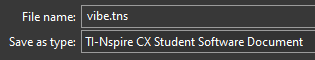
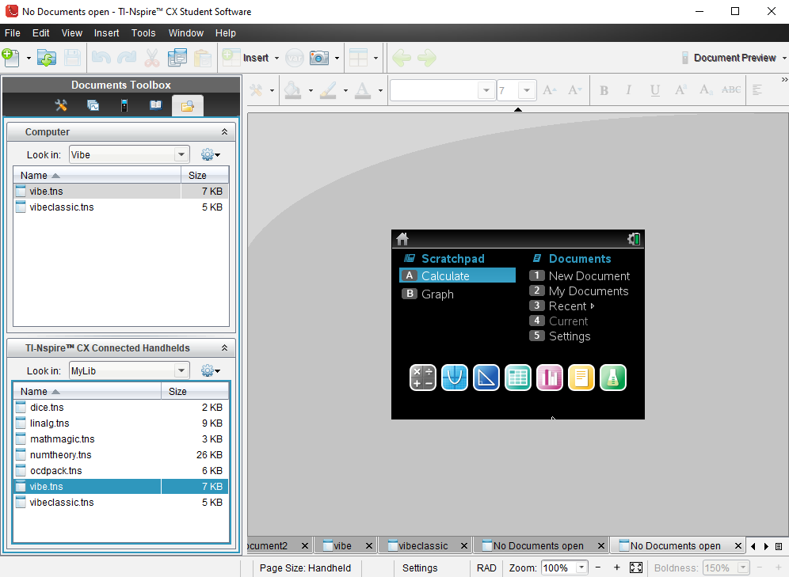
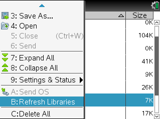
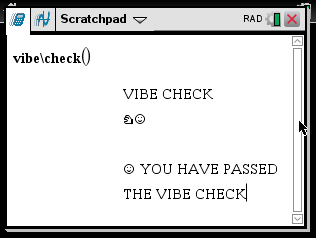

☺ Vibe Setup Manual ☺
If you're having trouble installing Vibe, use this manual.
NOTE: IN THIS MANUAL, "vibe.tns" IS INTERCHANGEABLE WITH "vibeclassic.tns"
Step 1

Download vibe.tns
Step 2

Using the TI-Nspire CX Student Software, copy vibe.tns to the folder MyDocuments\MyLib
If you don't know how to do this, look it up.
Step 3

Refresh libraries
Step 4

vibe.tns is now installed.
To run a command, the syntax is " vibe\[command]() "
For a list of commands, run the command " vibe\help() "
For more help, look up a guide on TI-Nspire CX installing and syntax.
Back to Vibe
Homepage